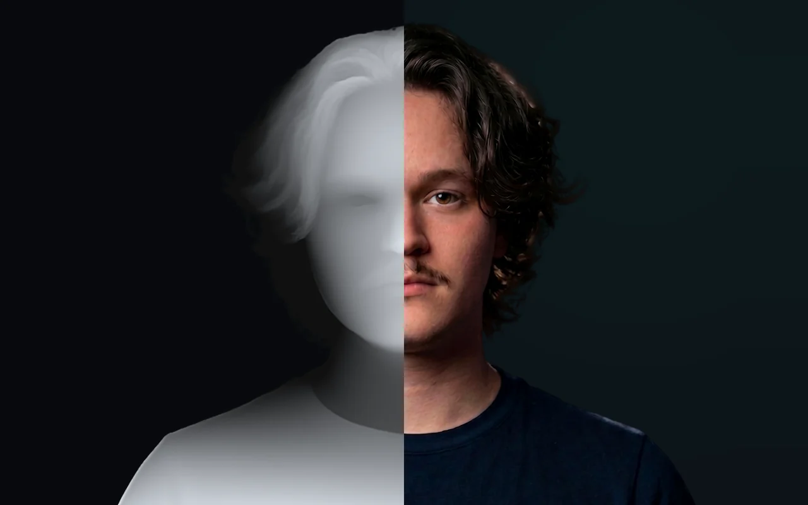
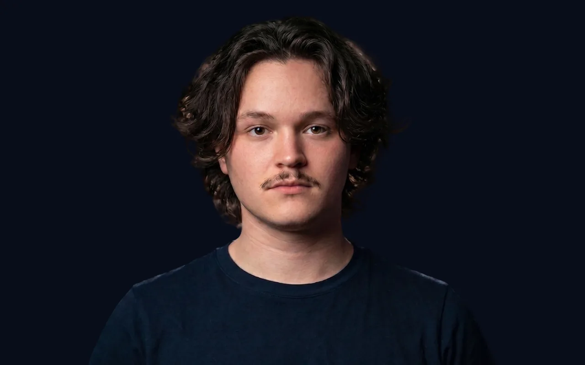
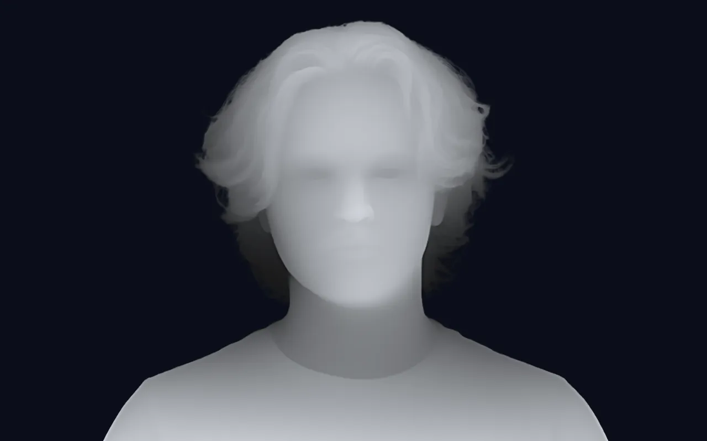
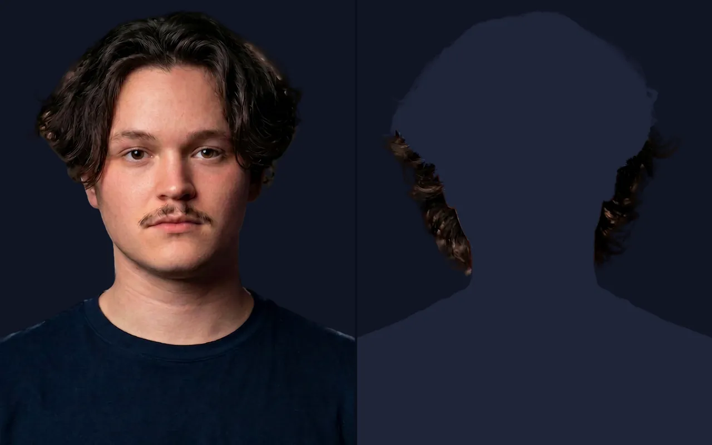
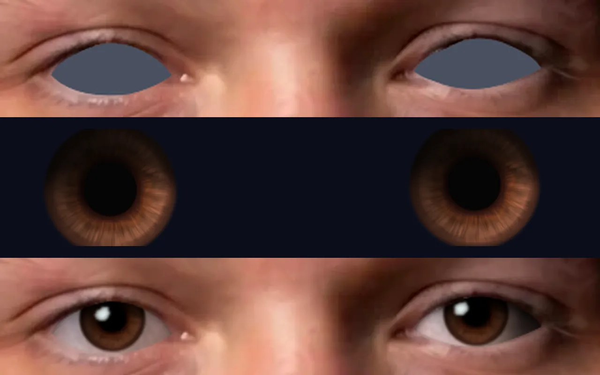
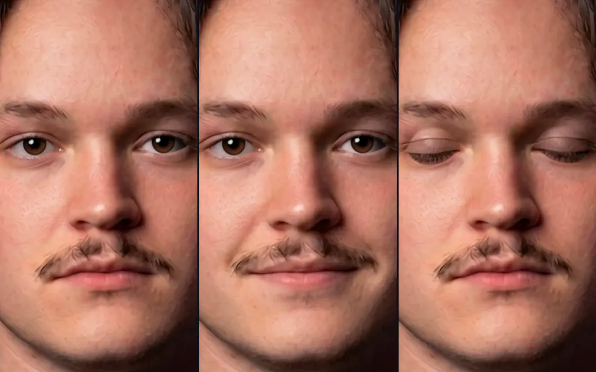
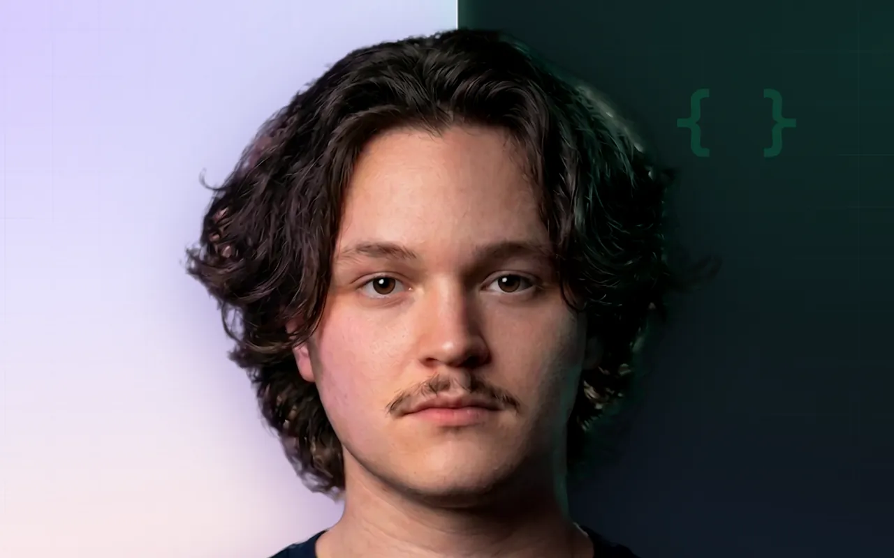
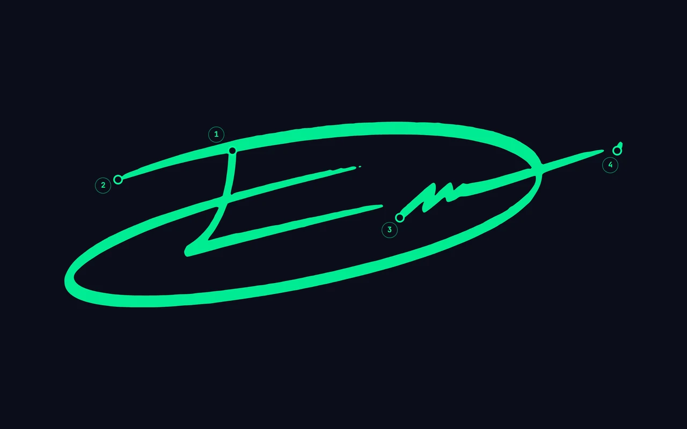
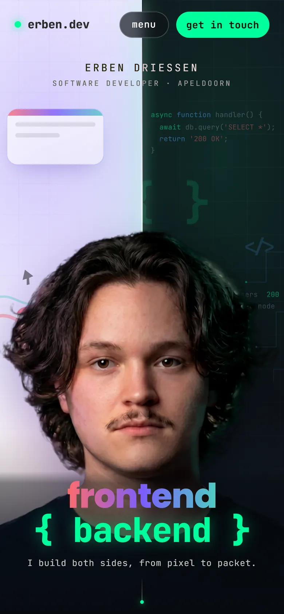

Case study · Web
This website
One photo of me, turned into a face that looks back.
The portrait on my homepage is live. It’s built from one studio photo. It turns toward your cursor, blinks, and smiles a little when it looks over at frontend or backend.

- 1 photo
- no 3D scan, no video
- 3 photo edits
- back plate, blink, smile
- ~430 KB
- every image the face loads on a phone
- 0 frameworks
- plain JS and WebGL
How it’s made
Five steps from one photo.
-

01 Photo
One studio shot, cut out from the background.
-

02 Depth
Depth Anything V2 guesses how far every pixel is from the camera. I ran it on my own GPU and mirrored the face’s depth so both cheeks turn the same way.
-

03 Layers
My loose hair is its own layer, so it slides over my neck when I turn instead of smearing. Under it sits an edited photo of me with the hair tucked away.
-

04 Eyes
The eyes are cut out and rebuilt from my own iris, so they can actually follow you.
-

05 Blink and smile
Two more edits of the same photo. My eyelids and the corners of my mouth move along a flow field, so nothing just fades in.
Two sides, one light
Each side lights me.

The signature
It signs itself.
Scroll down on the homepage and the banner steps back like a card on a desk. Then my ED gets written with a pen, stroke by stroke. E first, then the D in one long sweep. The pen follows the centerline of my signature.

Light on a phone
Cheap enough for a train.
A live face is easy on a desktop. On a phone it has to be cheap. A recruiter might open this on a train, on their phone.
- textures
- ~23 MB of GPU memory, not 62
- download
- ~430 KB of images, not 730
- drawing
- only when something moves
- scrolled past
- it stops
Windows display scaling (125% and 150%) needed its own fix to keep the face sharp.

Built with
- HTML
- CSS
- JavaScript
- WebGL (GLSL)
- GSAP
- Lenis
- SVG
- Supabase
Tools
- Depth Anything V2
- Gemini image edits
What I learned
The AI tools gave me raw material, a depth map and three edited photos. Most of the work came after that. Lining the edits up with the original, making the eyes behave and keeping it smooth on a phone.